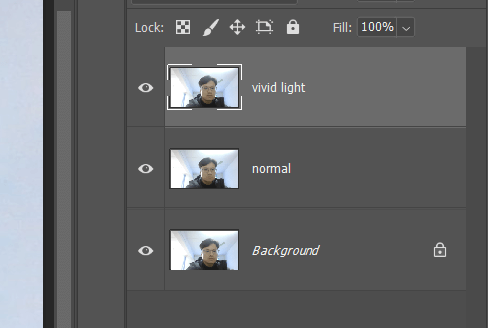

使用高斯模糊锐化图片 in Photoshop
之前介绍过几种锐化方法：
- smart sharpen 配合 darken 和 lighten 混合模式
- 通过 overlay 配合 high pass 的方式锐化
- 通过频率分离，复制 texture 图层的方式
下面介绍另一种通过 vivid light 配合高斯模糊的方式锐化且效果很好。
首先复制两份原图，改名为 normal 和 vivid light：

将 vivid light 图层 ctr I 反转图像，然后混合模式修改为 vivid light，并将图层设置为 smart object 方便后期调整：
vivid 图层选择高斯模糊，调整数值到能够提取出细节：
将 vivid 和 normal 图层合并为一个组，将组的混合模式修改为 overlay：
这样整个图像就锐化了，根据实际情况配合蒙版调整锐化区域。
标签：无